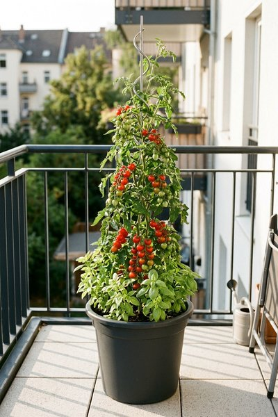
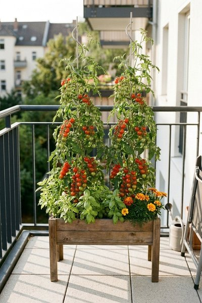
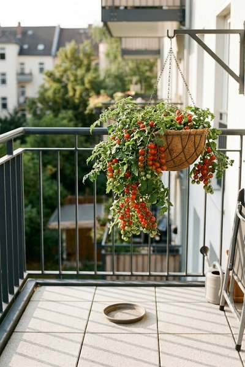

Tomaten auf dem Balkon: Kübel, Hochbeet oder Ampel?
Derselbe sonnige Balkon, drei Wege zu eigenen Tomaten. Jetzt im Winter ist die beste Zeit, sich zu entscheiden: Ab März werden Tomaten auf der Fensterbank ausgesät, nach den Eisheiligen (Mitte Mai) dürfen sie raus.



1. Im großen Kübel
Ein Kübel mit mindestens 20–30 Litern pro Pflanze, eine Spiralstange und Tomatenerde. Am besten Cherrytomaten – sie tragen lange und viel.
Vorteile: günstig, hoher Ertrag, flexibel aufzustellen.
Nachteile: viel Erde zu tragen, im Hochsommer täglich gießen.
ca. 15–30 € (Kübel, Stange, Erde, Pflanze)
2. Im Balkon-Hochbeet
Ein kleines Hochbeet auf Beinen mit Platz für zwei Tomaten, dazu Basilikum und Ringelblumen.
Vorteile: rückenschonend, Platz für Mischkultur, sieht ordentlich aus.
Nachteile: teurer, schwer, wenn es gefüllt ist (auf Traglast achten).
ca. 50–110 €
3. In der Ampel
Spezielle Hängetomaten wachsen über den Rand nach unten und brauchen keinen Platz auf dem Boden.
Vorteile: spart Bodenfläche, dekorativ.
Nachteile: geringerer Ertrag, trocknet sehr schnell aus (im Sommer bis zu zweimal täglich gießen), braucht einen stabilen Haken.
ca. 15–35 €
Vergleich auf einen Blick
| Kübel | Hochbeet | Ampel | |
|---|---|---|---|
| Kosten | 15–30 € | 50–110 € | 15–35 € |
| Ertrag | hoch | hoch | mittel |
| Platz am Boden | ca. 40 × 40 cm | ca. 100 × 40 cm | keiner |
| Gießen im Sommer | täglich | täglich | 1–2 × täglich |
| Für Anfänger | sehr gut | gut | mittel |
Richtwerte für Deutschland, Stand November 2026. Die Preise schwanken je nach Händler und Saison.
Welche Variante passt zu dir?
Für den Anfang: eine Cherrytomate im Kübel.
Mehrere Pflanzen und Kräuter: das Balkon-Hochbeet.
Wenig Platz: die Ampel – und Kräuter dazu: Kräutergarten auf dem Balkon.
Häufige Fragen
Wie viel Sonne brauchen Tomaten?
Mindestens 6 Stunden direkte Sonne. Süd- und Westbalkone sind ideal.
Warum ist ein Dach über den Tomaten gut?
Regen auf den Blättern fördert die Braunfäule. Unter einem Balkondach oder an der Hauswand bleiben Tomaten meist gesund.